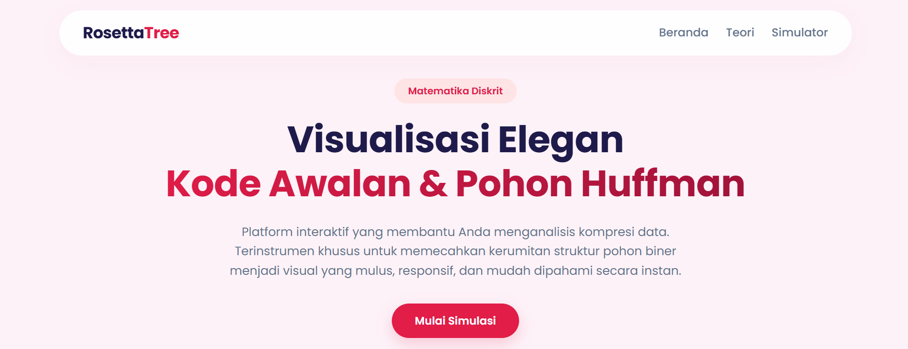
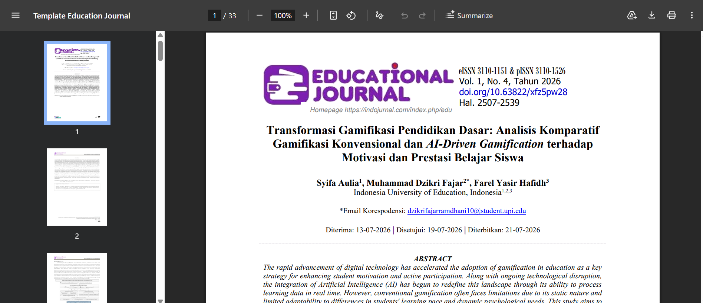
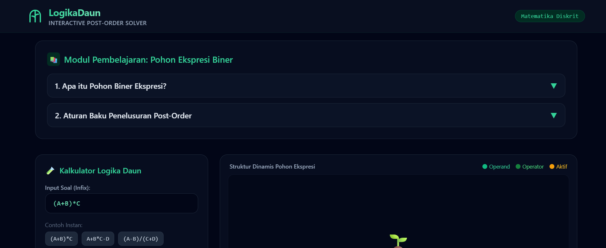
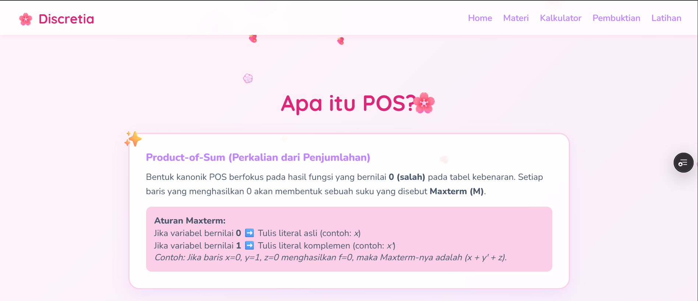

Home | About | Project | Contact
Berikut adalah beberapa project interaktif dan publikasi ilmiah yang pernah saya kerjakan.

Platform interaktif untuk menganalisis kompresi data dan memecahkan kerumitan struktur pohon biner menjadi visual yang responsif dan mudah dipahami.
Link Demo: Kunjungi RosettaTree

Artikel penelitian tentang analisis komparatif gamifikasi konvensional dan AI-Driven Gamification terhadap motivasi dan prestasi belajar siswa.
Link Jurnal: Baca Artikel Jurnal

Modul pembelajaran interaktif dan kalkulator untuk penelusuran pohon ekspresi biner menggunakan metode Post-Order traversal.
Link Demo: Kunjungi LogikaDaun

Aplikasi explorer dan simulator interaktif untuk mempelajari bentuk kanonik Product-of-Sum (POS) dan aljabar Boolean.
Link Demo: Kunjungi Discretia
| Ringkasan Portofolio Project | |||
|---|---|---|---|
| No. | Nama Project | Detail Project | |
| Teknologi | Status | ||
| 1 | RosettaTree | HTML, CSS, JS | Selesai |
| 2 | Jurnal Gamifikasi AI | Penelitian / AI | Selesai |
| 3 | LogikaDaun | HTML, CSS, JS | Selesai |
| 4 | Discretia | HTML, CSS, JS | Selesai |
Tertarik berdiskusi? Hubungi saya
© 2026 Farel Yasir Hafidh. Dibuat menggunakan HTML.